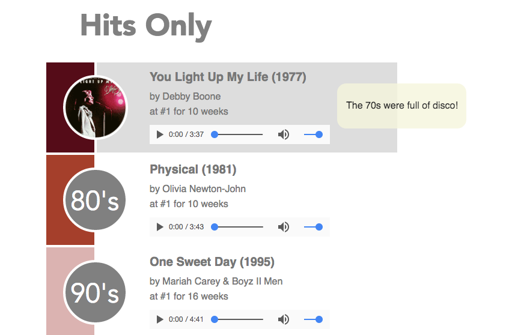

Time based

For my time-based interface, I wanted to create something that illustrated what popular music looked like through the years. I thought the best way to do so (within my skillset) was to have a song be representative of each decade. I wanted to keep it simple and emulate music sites like SoundCloud and Hype Machine. The interface had to be self explanatory and visual. I think my interface is successful because it shows all the info regarding each subsection, and it also incorporates interactive aspects to keep the audience interested.
Interface
In my interface design, I tried to incorporate interactive elements to make the design more engaging. I wish I could have made the overall design of the exercise more representative of the vinyls that I was representing. The layout that I ended up using was more generic than I had originally planned, but I think it works well. I kept the color scheme united by choosing the albums that shared the same colors and tones. The popout elements displayed the vinyl and the album cover, and the text shows the tracklist. In this way, the music is being tied back to the design. One thing I wish I could have done differently is to have the popouts include transitions to animate the record expanding from the thinner image to reveal the entire image.
Gmail form
Gmail's sign up form is simple and easily understandable. It consists of few fields to fill out, and splits the application into multiple pages so that users can fill out small bits at a time, rather than an overwhelming amount of information. I've experienced times when I have had to make a new email, but made a mistake on a field. As a result, I had to refill out every part of the form. This was not good design. Gmail has made it so that it is much easier to use and prevent mistakes.
Spotify Interface
Spotify has become one of the biggest streaming services on the market by creating a streamlined and intuitive interface that engages its users through interactive modules and ease of browsing. It has two main areas for navigation - one that organizes your saved music and playlists, while the other serves as a search area. The "landing page" is a page that let's you browse through various genres, artists, and playlists that Spotify generates for you based on your listening preferences. One aspect that makes Spotify's interface stand out is it's "back" function. It saves the pages that you previously have browsed and allows you to seemlessly switch back and forth between different tracks, albums, artists, and more.